Is the Marine Economy Just Another Narrative? With Humanoid Robotics Overcrowded, Will Underwater Robots Become the Next Hot Sector?
Key Points
- Venture capital is returning cautiously to underwater robotics, but in smaller rounds concentrated in commercially proven niches such as seabed mapping, infrastructure inspection, and defense.
- Recent momentum is being driven by real-world demand shocks, the maturation of resident and highly autonomous systems, and supportive industrial and defense policy in Europe, the United States, and China.
- The strongest near-term business cases are scenarios where specialized robots can cut vessel days, operate persistently, and perform inspection or light intervention in places general-purpose systems struggle to serve efficiently.
- Established leaders are scaling integrated hardware-and-service platforms, while startups are gaining traction through resident robots, data platforms, and multi-vehicle autonomous operations.
1. International Venture Capital Market: "Small-Ticket" Recovery Focusing on Specific Mature Scenarios
Underwater robots are automated systems designed to operate in subsea environments, with capabilities including mobility, sensing, data collection, and manipulation. They are used widely in deepwater and hazardous settings where sustained human operations are difficult or impractical.
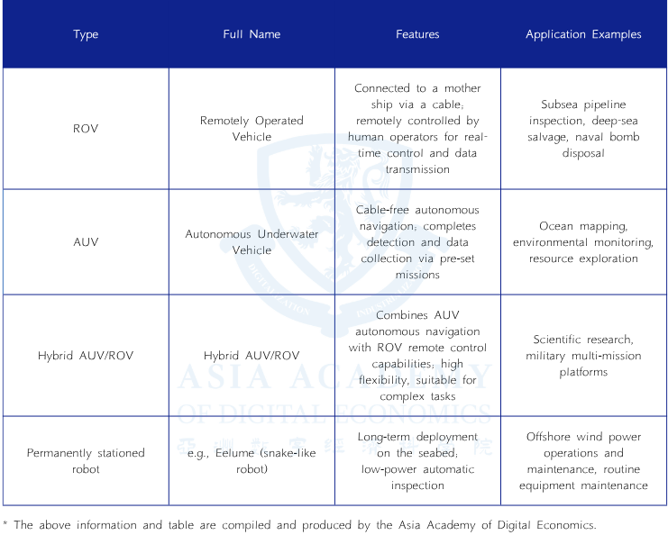
Over the past six months, investment sentiment in the sector has improved modestly after a long cold period. Backers now include top-tier international venture firms such as Northzone, Primary Venture Partners, and GSR Ventures; sovereign or quasi-sovereign capital such as the NATO Innovation Fund and Investinor; and defense-oriented strategic investors including Lockheed Martin Ventures, RTX Ventures, and IQT.
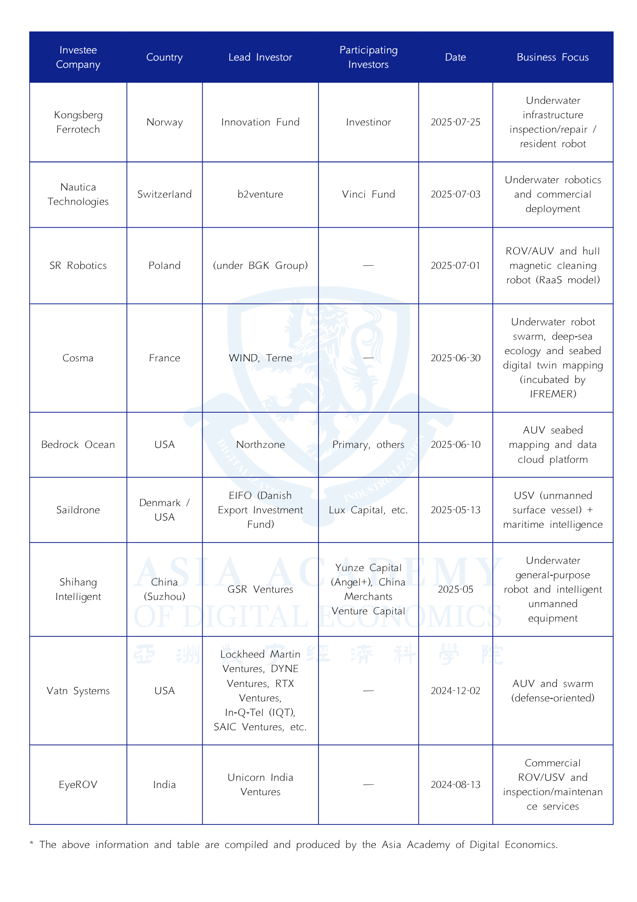
The recovery remains selective. Round sizes are generally small compared with heavily funded sectors such as humanoid robotics: most financings fall in the single-digit to low tens of millions of dollars, and a round reaching roughly $25 million, as in Bedrock’s case, already counts as a standout. Capital is concentrating on specific use cases with clearer commercialization paths, including seabed mapping and cloud data services, subsea infrastructure inspection and resident operations, defense and coordinated autonomous systems, and port, shipping, offshore wind, and ecological monitoring.
Regional patterns are also distinct. Europe is seeing active participation from sovereign and policy-linked funds, the United States retains strong momentum through the defense industrial chain, and China shows visible involvement from industrial capital and local government-backed funds, though many projects there remain at an earlier stage.
2. Analysis of Driving Forces Behind Recent Trends
The sector’s recent warming is not the result of hype alone. It reflects a combination of concrete demand signals, improving technical feasibility, and policy support that has made the market more investable than it was in previous years.
Demand-Side Triggers
A series of subsea communications and power interconnection incidents in 2024 and 2025, including disruptions in areas such as the Red Sea and the Baltic, highlighted how slow and complex repair cycles can be. Those events increased the priority of continuous monitoring, rapid survey, and fault localization, and elevated related budgets.
At the same time, offshore wind continues to expand globally. New capacity additions and larger project pipelines, especially in the United States and Asia-Pacific, are creating practical demand from installation through long-term operations and maintenance. This is translating into more routine requirements for inspection, surveying, and condition monitoring.
Supply Side: The Arrival of a Technological Inflection Point
The most important shift on the supply side is the emergence of resident and highly autonomous systems. In the past, subsea robots were usually deployed only when a support vessel was available and weather allowed, then recovered after each job. Newer systems can remain subsea for long periods and be activated on demand, making them function more like permanently stationed maintenance resources than temporary tools.
This maturity is most evident in inspection, light intervention, and mapping. Heavy intervention still often requires work-class ROVs or crewed support, and the sector remains constrained by underwater acoustic bandwidth, energy density, and long-term reliability. Even so, many routine tasks are now technically and operationally viable for more autonomous systems.
In several scenarios, the unit economics are beginning to outperform traditional vessel-and-crew operations. Offshore wind is a good example: routine inspection and maintenance have historically required expensive ships, large teams, and narrow weather windows. Robotic systems can reduce vessel days, operate more continuously, and lower per-mission costs. The economics are strongest in mapping, baseline surveys, repeat surveys, and routine inspection; major failure response and extreme sea states still require high-specification vessels and careful operational windows.
Domestic and International Policies
Policy is amplifying these market signals. In China, the 14th Five-Year Plan for marine economic development has elevated deep-sea and offshore engineering equipment as strategic priorities, and officials have repeatedly highlighted deep-sea and aerospace development as future industries. This may draw more non-market state capital into the sector and gradually shift it from a niche category toward one with valuation support.
In Europe and the United States, defense and strategic capital are playing a multiplier role. The U.S. FY2025 budget continues to support families of unmanned underwater vehicles, including larger classes, while strategic investors such as Lockheed, RTX, and IQT are using early financing to validate both technologies and use cases, creating signals that resemble quasi-orders. The NATO Innovation Fund has also invested directly in subsea inspection and resident-operation themes.
3. General-Purpose or Vertical-Specific: Which Scenarios Require Specialized Underwater Robots That General-Purpose Robots "Cannot Easily Handle"?
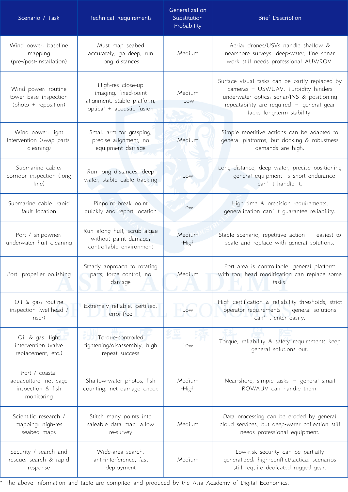
The distinction between general-purpose and vertical-specific underwater robots is fundamentally economic and operational. General-purpose platforms are suitable where missions are diverse, tolerances are forgiving, and the value of flexibility outweighs the cost of imperfect fit. Specialized systems become necessary when the environment, payload, endurance requirement, or intervention task creates hard constraints that a broad-purpose robot can only meet inefficiently or unreliably.
The clearest examples are narrow, high-value subsea scenarios in which persistent presence, precise navigation, unusual form factors, or dedicated tooling matter more than broad versatility. Resident inspection at offshore wind sites, light intervention around wellheads and manifolds, post-incident cable localization, corridor monitoring for critical subsea infrastructure, hull-cleaning services in ports, and mine-countermeasure or defense missions all benefit from purpose-built systems. In such settings, the winning product is often not the robot alone but a tightly integrated operating stack of docking, charging, communications, payloads, remote control, and data services.
By contrast, tasks involving heavy intervention, highly variable manipulator work, or severe environmental uncertainty still favor traditional work-class systems or human-supported operations. In other words, specialization is most valuable where the task can be productized into a repeatable service and where reducing vessel dependence creates a decisive advantage.
4. Industrialization Rollout Timelines for Various Niche Scenarios
Commercial adoption is not occurring evenly across the underwater robotics landscape. The first wave is concentrated in scenarios dominated by inspection and mapping, where revenue is more repeatable and service economics are clearer. Broader automation of intervention-heavy subsea work will take longer and depends on reliability, standards, and sustained cost advantages.
Currently Being Commercialized (2024–2025, Already Generating Actual Revenue/Customer Repurchases)
The most mature applications today include underwater inspection and mapping for offshore wind, especially route, scour, and foundation inspection; rapid post-incident survey and localization for damaged subsea cables; robot-as-a-service hull cleaning for ports and shipowners; oil and gas IMR programs paired with resident light-intervention pilots; and remote operations combining uncrewed surface vessels with AUVs.
These use cases share a similar commercial logic: they are led by inspection and survey tasks, supplemented by light intervention, and they replace large amounts of vessel time. That makes cash flow more continuous and allows them to scale into meaningful service revenue earlier than equipment-only businesses.
Likely to Be Commercialized and Scale Up Within 1–2 Years (2026–2027)
The next stage is likely to include larger-scale deployment of resident AUVs and subsea robots across offshore wind farms and critical wellhead or manifold assets, evolving from isolated pilot stations to multi-node networks with automated docking and charging. Eelume and similar arm-body integrated approaches are representative of this direction.
At the same time, the concept of the USV mothership is likely to move from project-based deployment to seasonal or annual framework usage in wind and subsea cable corridors. Lightweight intervention toolchains, including non-destructive testing, thickness measurement, cathodic protection checks, marking, and small-valve operations, are also likely to become service offerings anchored around resident infrastructure.
Commercially, integrated stacks that combine the robot, resident base, tooling, and cloud platform should prove more attractive than selling stand-alone machines. That model supports better margins and stronger repeat purchasing.
Evolution Within 3–5 Years (2028–2030)
Over a three- to five-year horizon, medium-intensity intervention is likely to become more automated, allowing resident systems to take over portions of work that previously required traditional work-class ROVs, such as limited cutting, recoating, sealing, and similar tasks.
Another likely development is corridor-scale continuous monitoring for international subsea cables and oil and gas pipelines, with semi-fixed sensing and resident nodes enabling a steady-state operating model of routine inspection plus immediate response to anomalies. In parallel, high-frequency revisits and cloud-based seabed data subscriptions could turn commercial digital-twin models into durable profit centers, particularly as regulatory and insurance interfaces become more standardized.
The main uncertainties in this period are standardization, reliability, and unit economics. But once framework agreements and service subscriptions become common, companies offering integrated solutions should enjoy far greater valuation upside than pure hardware vendors.
5. Movements of International Giants
Large incumbents remain central to the underwater robotics market because they combine technical depth, installed customer relationships, and the ability to package hardware, operations, and support into deployable systems. Their current strategies show a clear shift from selling individual machines toward delivering integrated subsea capability.
Kongsberg Gruppen
Norway-based Kongsberg Gruppen has long been one of the world’s core suppliers of marine surveying and subsea operational equipment. Its portfolio spans navigation, acoustic systems, and autonomous underwater vehicles, serving research institutions, energy companies, and marine engineering customers with full-stack solutions.
Its flagship HUGIN Endurance AUV exemplifies its position. Built for long endurance, deepwater operation, and high-resolution mapping, the platform combines advanced sonar, imaging, energy management, and redundancy to support multi-week missions at great depth. In a 2024 offshore Norway canyon mapping mission, it reportedly replaced a more traditional survey vessel and submersible workflow, completing a continuous 15-day mission, shortening the overall project cycle by nearly half, and cutting direct costs by more than 50 percent while reducing weather and safety exposure.
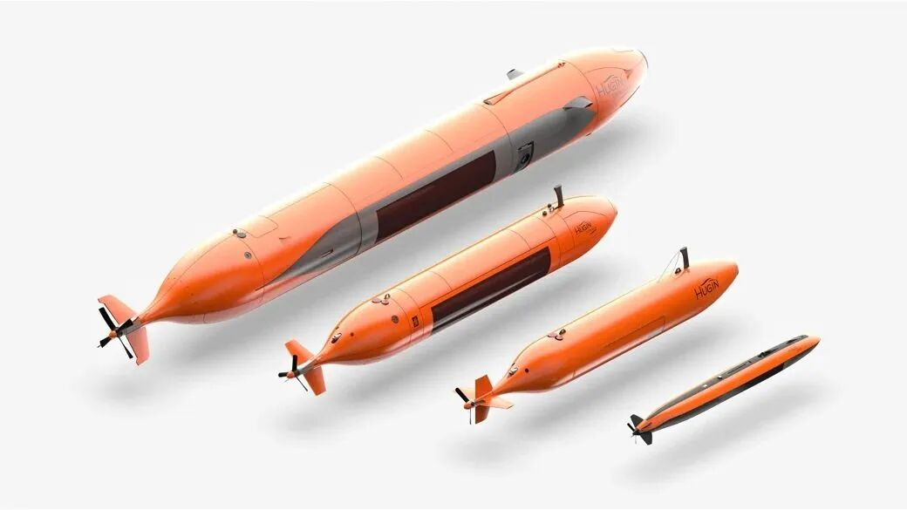
Kongsberg’s advantage lies not only in hardware performance but in standardizing a demanding mission type into a replicable delivery model. It combines mission planning, payload integration, data processing, quality control, training, and maintenance into an integrated offering that encourages repeat business. Longstanding relationships with research organizations, survey institutions, and major energy companies further reduce execution risk and reinforce its leadership in deepwater mapping and inspection.
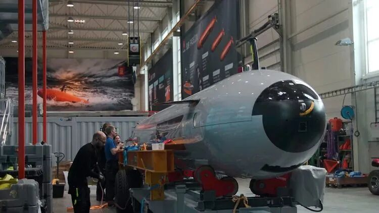
Saab Seaeye
Saab Seaeye, part of Sweden’s Saab Group, has built its reputation in remotely operated underwater vehicles serving both energy operations and defense security. As the market shifts toward electrification and lower-carbon operations, its SR20 eWROV has become a focal product for cost-sensitive regions such as the North Sea.
Unlike traditional hydraulic systems, the SR20 uses all-electric drive, reducing leakage risks, maintenance complexity, and emissions. It supports sonar and HD imaging payloads, can perform fine manipulation and structural inspection, and is designed to connect with subsea resident stations for charging, data transfer, and remote operation.
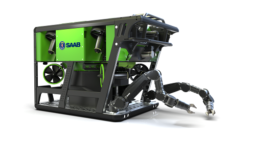
In a 2024 trial off Scotland, the system reportedly remained resident at a 150-meter offshore wind worksite for 60 days using an underwater charging base. Compared with conventional daily vessel deployment and recovery, this sharply reduced vessel mobilizations and sustained operations even during rough winter weather. Saab Seaeye’s broader strength is its ability to serve both the offshore energy and defense markets through Saab’s global supply chain, customer access, and compliance infrastructure, making its resident electric ROV model especially competitive on total cost of ownership.
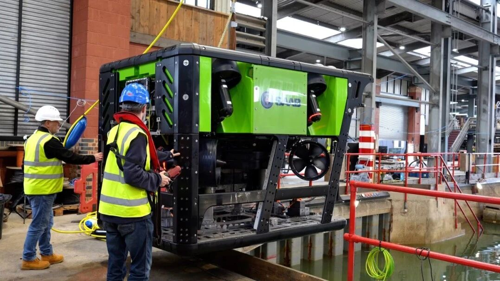
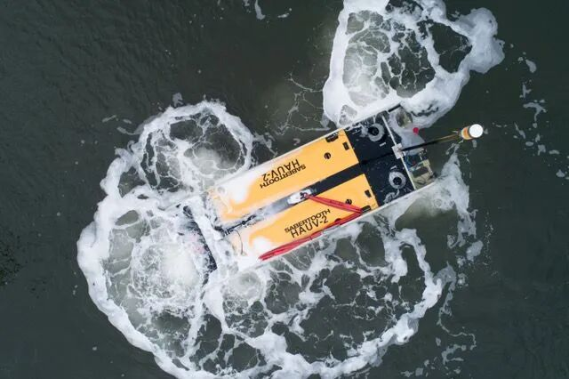
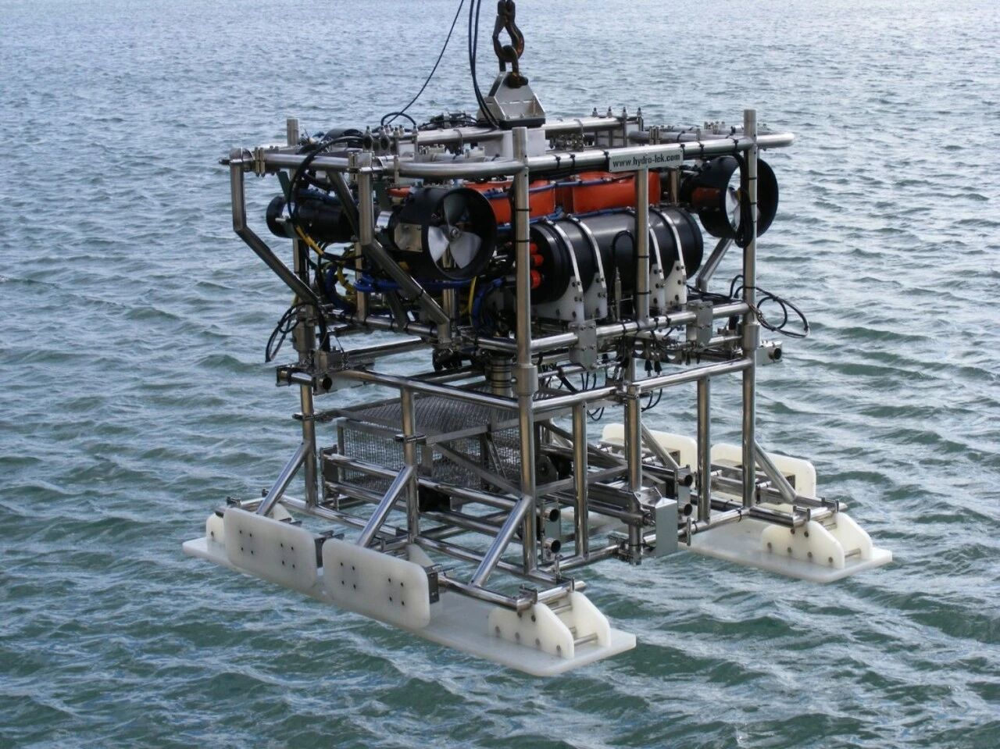
Oceaneering International
Houston-based Oceaneering International remains one of the global leaders in subsea engineering and technology services. By the end of 2024, it operated the world’s largest fleet of work-class ROVs, with more than 250 units deployed across deepwater oil and gas, subsea infrastructure, defense, and scientific applications.
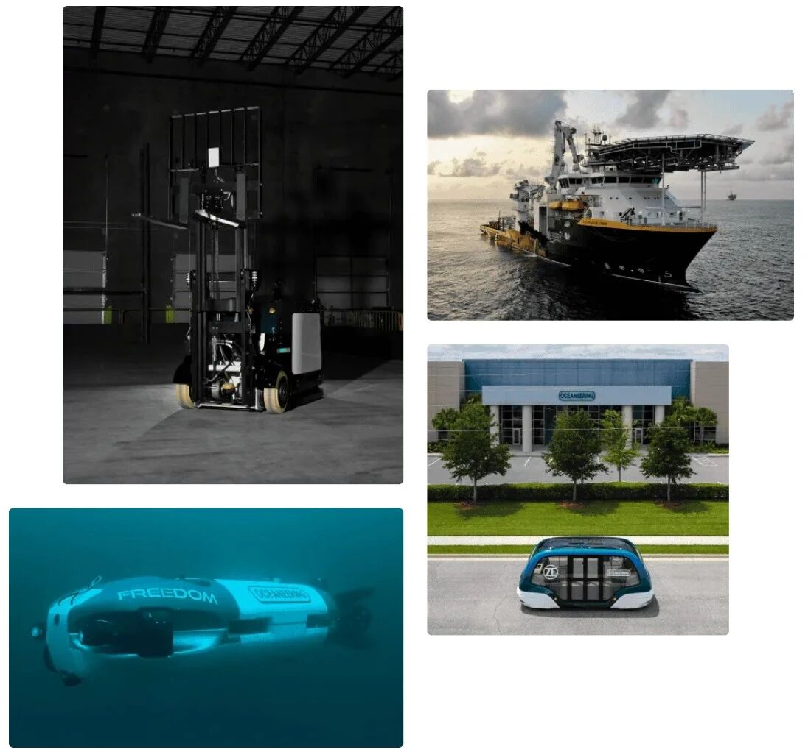
Its traditional strength is in heavy-duty operational capability. Platforms such as Magnum Plus and Millennium Plus support drilling, pipeline inspection, subsea installation, and repair. At the same time, Oceaneering has been extending into hybrid autonomy through systems such as Freedom, developed with major energy partners. Freedom blends AUV and ROV characteristics, allowing tethered precision work when needed while also supporting untethered autonomous inspection and survey over long distances.
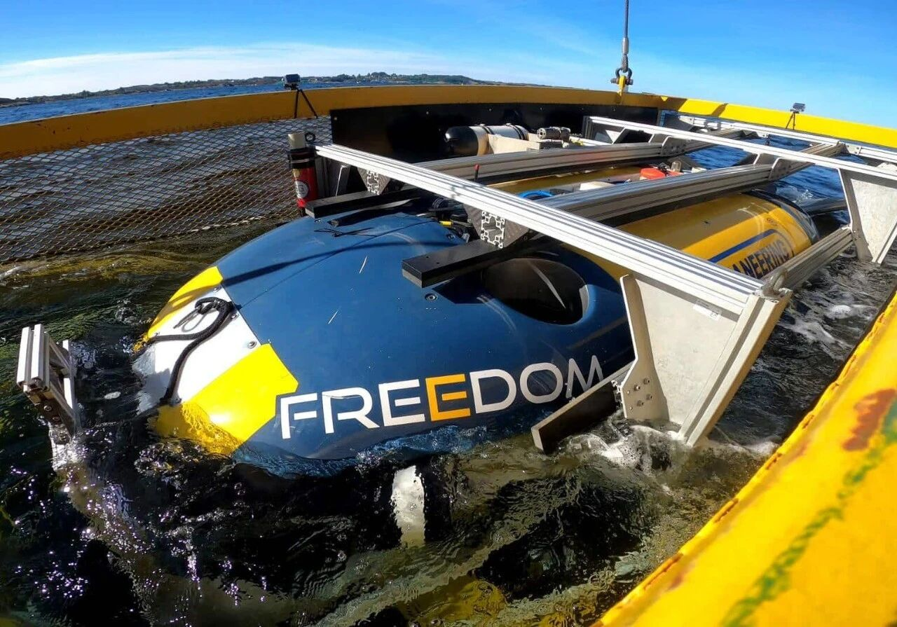
The company’s geographic reach across the Gulf of Mexico, Brazil, West Africa, the North Sea, and Asia-Pacific, along with customers such as Shell, BP, TotalEnergies, and major subsea contractors, gives it a powerful deployment network. Its business model also combines equipment with services, supporting both long-term rentals with operating teams and task-specific robot modifications. That combination helps stabilize cash flow through commodity cycles and keeps Oceaneering firmly positioned at the top of the work-class ROV market.
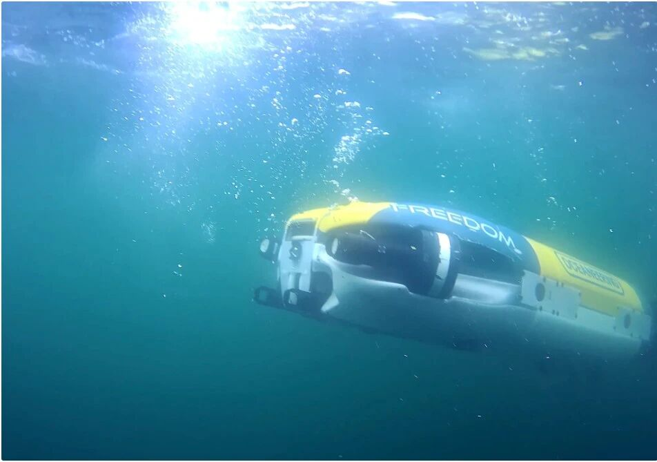
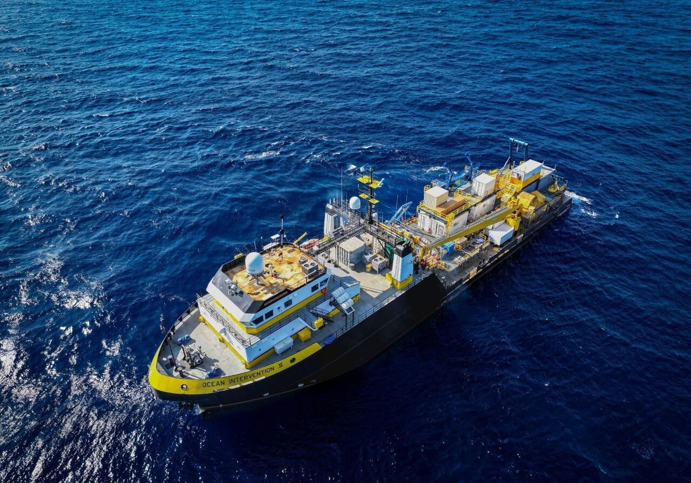
Exail
Exail, formed through the 2022 merger of ECA Group and iXblue, has become a major European player by combining underwater robotics with advanced navigation, inertial measurement, and acoustic communication technologies. Its subsea offering spans AUVs, USVs, and complete uncrewed operational systems.
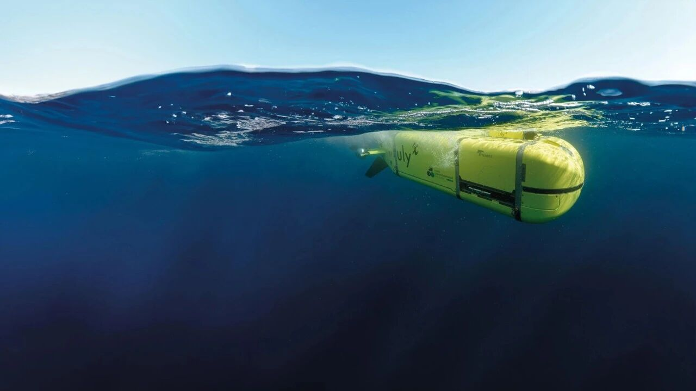
Its A18-M AUV and DriX USV are central to this strategy. The A18-M is designed for mine countermeasures, seabed mapping, and marine geoscience, while DriX provides extended autonomous surface operation and can serve as a deployment, recovery, and communications relay platform. Together they enable a coordinated USV-plus-UUV operating model that has already been fielded in European naval mine-countermeasure programs.
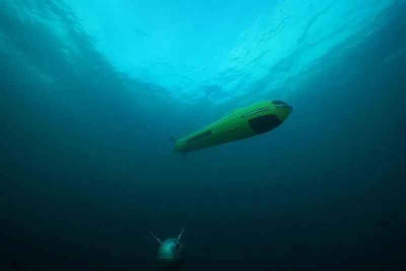
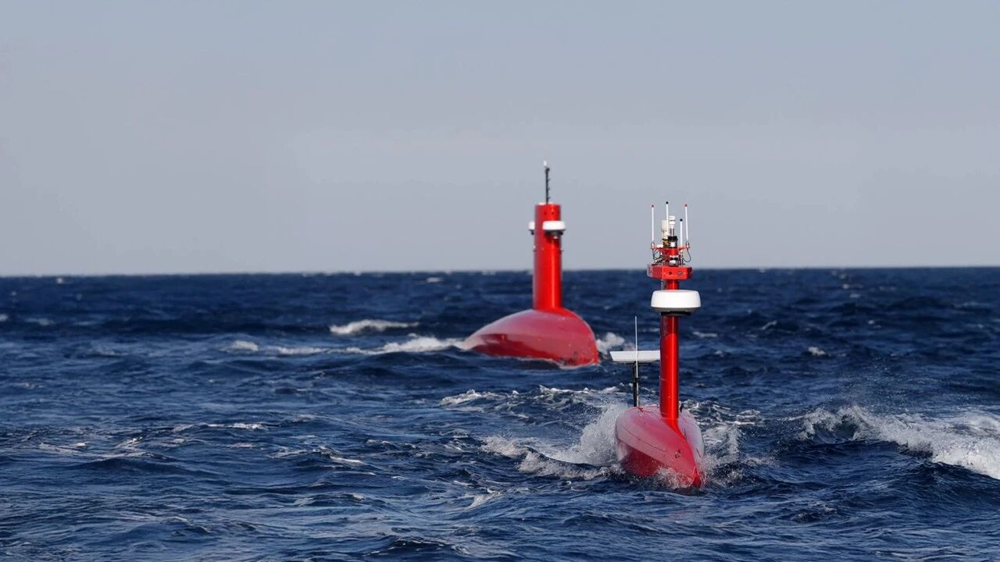
Exail’s value proposition goes beyond hardware. It offers complete deliverable systems integrating platforms, data processing, training, and support, making adoption easier for military and research customers. Repeated validation by French defense procurement authorities has strengthened market trust, and the company is now using that reputation to expand into Asia-Pacific applications such as port security and offshore energy inspection. It has effectively moved from being a technology integrator to a provider of coordinated, standardized unmanned maritime systems.
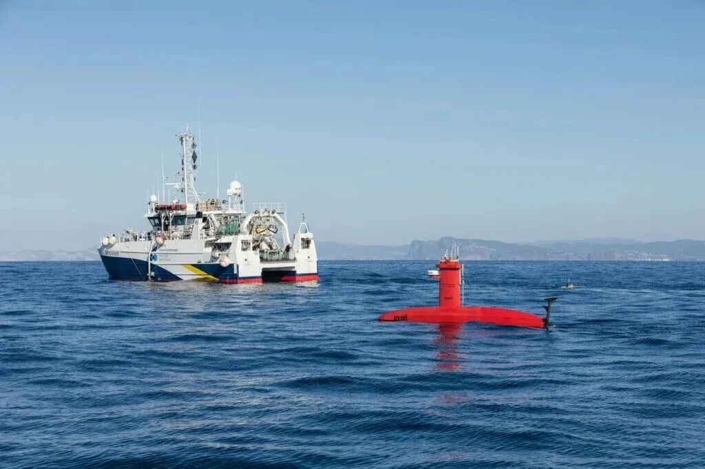
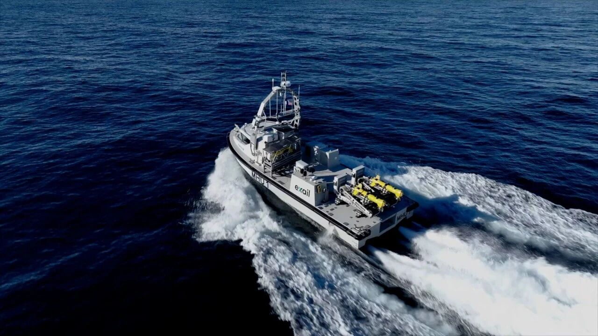
6. Movements of Emerging Startups
Startups are pushing the sector forward by targeting high-friction operational gaps that incumbents do not always address efficiently. Their edge tends to come from tighter specialization, new service models, and architectures built around persistent autonomy and data delivery rather than stand-alone equipment sales.
Eelume
Founded in 2015 out of snake-robotics research at the Norwegian University of Science and Technology, Eelume is developing resident subsea inspection and light-intervention systems. Its core concept is a flexible snake-like robot that can access confined spaces traditional ROVs struggle to reach, making it well suited to subsea infrastructure, offshore wind, aquaculture, and especially oil and gas environments.
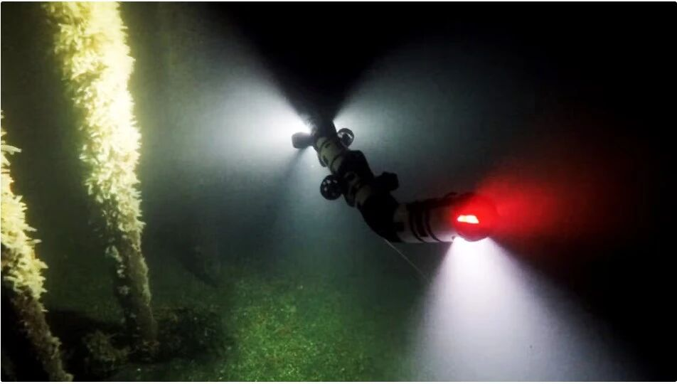
The robot is designed to remain subsea for extended periods, carrying cameras and light tools for visual inspection, positioning, and adjustment tasks. Its modular design supports remote maintenance and upgrades while reducing the frequency of vessel dispatches. A North Sea resident trial at Equinor’s Åsgard field demonstrated the concept in valve inspection and manipulation tasks.
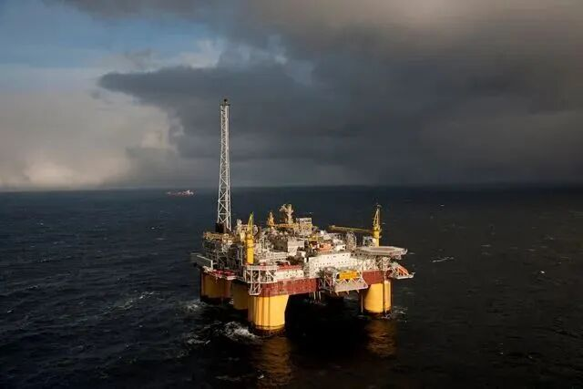
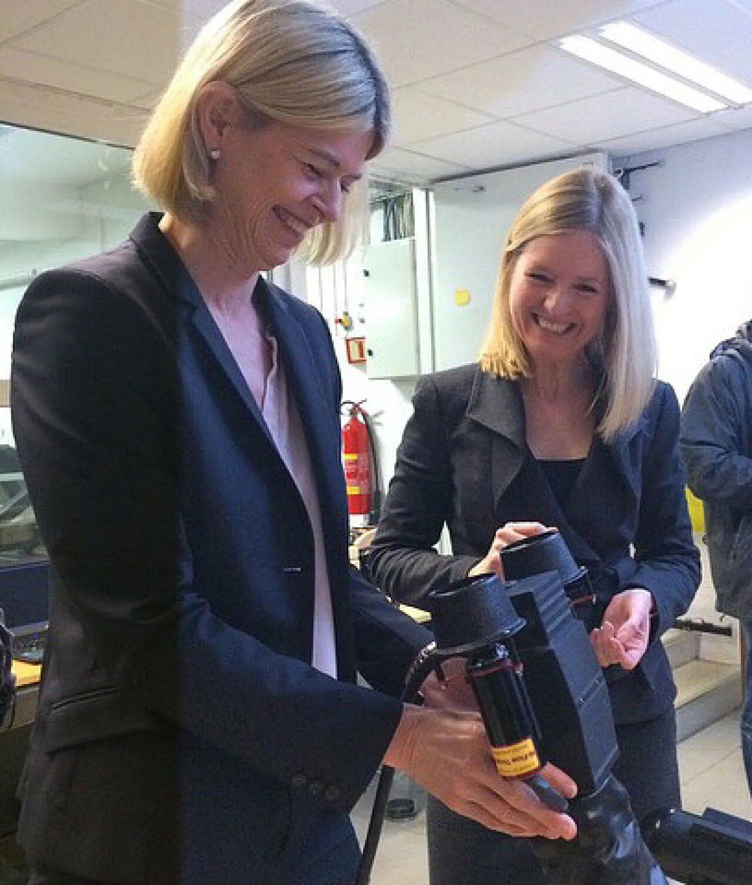
Eelume is also a strong example of an industry-academia-research commercialization model. It emerged from university research, worked closely with SINTEF, partnered with Kongsberg Maritime for autonomy and acoustic communications, and used Equinor’s real subsea infrastructure as a test and validation environment. Its market appeal lies in combining resident deployment, flexible intervention, and lower operating cost into a model that can be replicated across multiple subsea asset classes.
Bedrock Ocean Exploration
U.S.-based Bedrock Ocean Exploration is positioning itself as a vertically integrated seabed mapping company built around autonomous underwater vehicles and a cloud data platform. It aims to deliver much higher-resolution seabed intelligence than existing public chart data while emphasizing low environmental impact and broad accessibility of marine data.
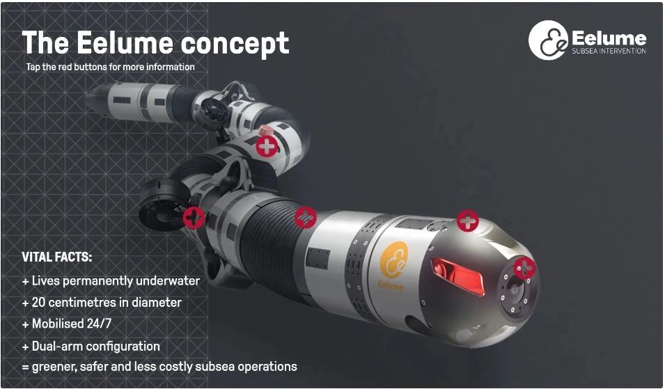
Its system combines a fleet of compact AUVs with sonar and magnetic sensing payloads and the Mosaic cloud platform for near-real-time processing and analysis. Once missions are completed, data is transferred to the platform for rapid interpretation and visualization. This design allows Bedrock to replace a significant portion of the work traditionally performed by larger survey vessels, improving both cost and environmental performance.
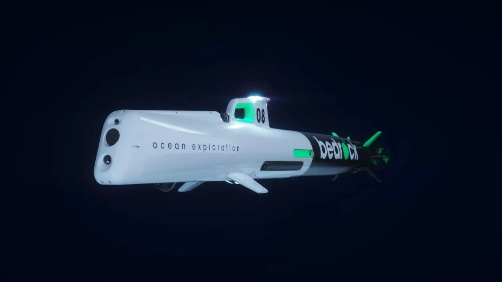
The company has already conducted offshore mapping missions in the United States for offshore wind development zones and subsea cable routes. Its offering is not limited to selling or leasing hardware; instead, it emphasizes an end-to-end service model spanning deployment, data acquisition, processing, and delivery. That data-as-a-service approach is particularly attractive to offshore wind, oil and gas, and environmental assessment customers, and recent fundraising underscores investor confidence in both its technology and business model.
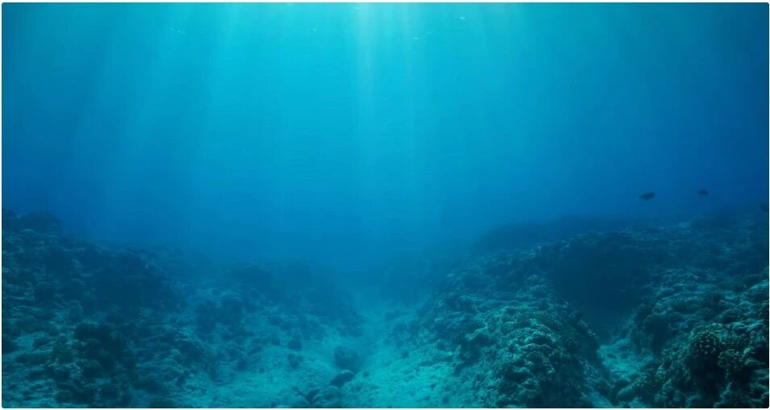
Ocean Infinity
Ocean Infinity is building itself into a global operator for seabed data services by combining uncrewed surface vessels, multi-AUV operations, and remote operating centers into a standardized offering under its Armada system. The goal is to turn subsea survey and geophysical work into a scalable, low-carbon service product for energy companies and governments.
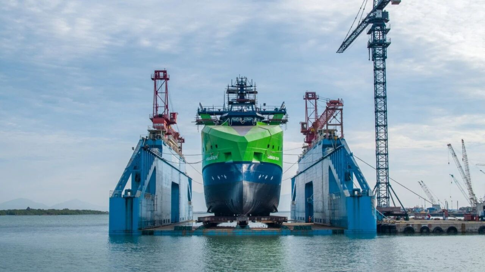
The Armada architecture uses multiple AUVs for underwater data collection and USVs as deployment, recovery, and communications platforms. By coordinating several autonomous vehicles through remote operations, the system can execute large survey campaigns with reduced human presence and improved efficiency.
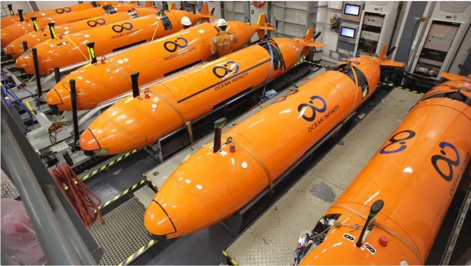
The company is expanding internationally, with work that includes floating offshore wind survey contracts off the U.S. West Coast and long-term framework agreements with major energy customers such as Shell. Its strategy also extends into vessel electrification and propulsion investment to strengthen sustainability and operating economics. Ocean Infinity’s real differentiator is the conversion of multi-vehicle autonomy into a standardized service model backed by compliance certification and recurring framework business, giving it substantial room for long-term growth.
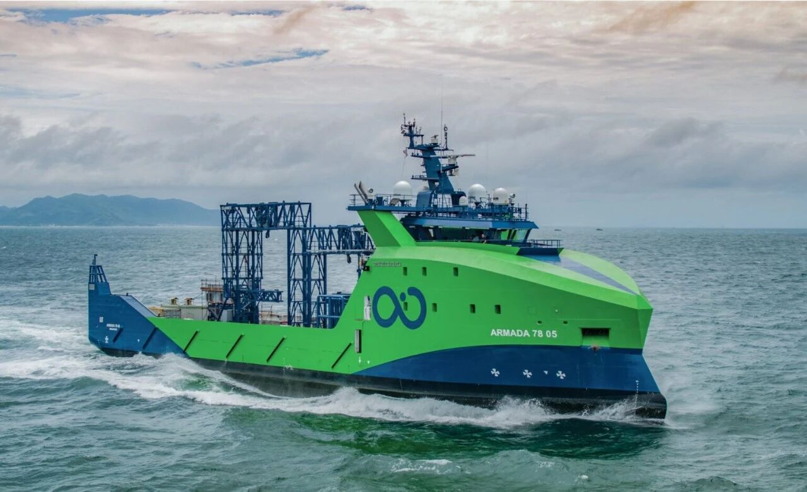
- [1] Kongsberg. A full week of AUV demonstrations for DIU and US Navy. Kongsberg.com, 2024. kongsberg.com/newsroom/news-archive/2024/auv-demonstrations-diu-us-navy.
- [2] Kongsberg Maritime. Digital future for ocean research. Kongsberg.com, 2021. kongsberg.com/maritime/feature_articles/2021/5/digital-future-ocean-research.
- [3] Kongsberg Maritime. AutoShip: Autonomous ship technology. Kongsberg.com, 2020. kongsberg.com/maritime/feature_articles/2020/12/autoship.
- [4] Kongsberg. Driving force for climate change in the maritime industry. Kongsberg.com, 2025. kongsberg.com/newsroom/news-archive/2025/driving-force-climate-change-maritime.
- [5] Saab Seaeye. SR20 Electric ROV Datasheet. SaabSeaeye.com, 2025. saabseaeye.com/uploads/sr20_datasheet_rev2_2025.pdf.
- [6] Saab Seaeye. Underwater robotics for deep ocean research. SaabSeaeye.com. saabseaeye.com/news/underwater-robotics-deep-ocean-research.
- [7] Oceaneering. 2024 Q4 10-K Annual Report. Oceaneering.com, 2024. s201.q4cdn.com/108344635/files/doc_financials/2024/q4/2024-Q4-10K-as-filed.pdf.
- [8] Oceaneering. Oceaneering selected as finalists for Offshore Achievement Awards. Oceaneering.com. oceaneering.com/oceaneering-selected-as-finalists-offshore-achievement-awards.
- [9] Oceaneering. Oceaneering wins contract to build Freedom AUV and remote operations center for US Navy. Oceaneering.com. oceaneering.com/oceaneering-wins-contract-build-freedom-auv-remote-operations-center-us-navy.
- [10] Oceaneering. Oceaneering announces Department of Defense contract award. Investors.Oceaneering.com, 2025. investors.oceaneering.com/news/news-details/2025/Oceaneering-Announces-Department-of-Defense-Contract-Award.
- [11] Euronext. ECA Group and iXblue join forces and become Exail. Euronext.com, October 18, 2022. live.euronext.com/en/products/equities/company-news/2022-10-18-eca-group-and-ixblue-join-forces-and-become-exail.
- [12] Exail. Exail awarded strategic European defense contract to supply Drix USVs for ISR missions. Exail.com. exail.com/news/exail-awarded-strategic-european-defense-contract-supply-drix-usvs-isr-missions.
- [13] Unmanned Systems Technology. Exail showcases integrated USV-AUV operations in collaborative trial. UnmannedSystemsTechnology.com, June 2025. unmannedsystemstechnology.com/2025/06/exail-showcases-integrated-usv-auv-operations.
- [14] Unmanned Systems Technology. Exail to supply inertial navigation systems for military UUV integration. UnmannedSystemsTechnology.com, August 2025. unmannedsystemstechnology.com/2025/08/exail-supply-inertial-navigation-systems-military-uuv-integration.
- [15] Business Norway. Eelume is a game-changer in subsea inspection. BusinessNorway.com. businessnorway.com/solutions/eelume-is-a-game-changer-in-subsea-inspection.
- [16] Equinor. Collaboration on swimming robots for subsea maintenance. Equinor.com. equinor.com/news/archive/collaboration-swimming-robots-subsea-maintenance.
- [17] Norwegian SciTech News. Training underwater robots to find charging stations. NorwegianSciTechNews.com, October 2023. norwegianscitechnews.com/2023/10/training-underwater-robots-find-charging-stations.
- [18] SINTEF. Snake robot ready to go on watch in the deep seas. SINTEF.no, 2019. sintef.no/en/latest-news/2019/snake-robot-ready-to-go-on-watch-in-the-deep-seas.
- [19] Kongsberg Maritime. Eelume robot: Snake-like underwater intervention AUV. Kongsberg.com, December 2020. kongsberg.com/maritime/feature_articles/2020/12/eelume-robot.
- [20] Bedrock Ocean. Mission — Mapping the seafloor with autonomous underwater robots. BedrockOcean.com. bedrockocean.com/mission.
- [21] TechCrunch. Bedrock Ocean dredges up $25M to map the seafloor with robots. TechCrunch, June 10, 2025. techcrunch.com/2025/06/10/bedrock-ocean-dredges-up-25m-to-map-the-seafloor-with-robots.
- [22] Primary VC. Why we invested in Bedrock Ocean. Primary.vc. primary.vc/firstedition/posts/why-we-invested-in-bedrock-ocean.
- [23] Built In SF. Bedrock Ocean raises $25M to expand seafloor mapping technology. BuiltInSF.com, June 11, 2025. builtinsf.com/articles/bedrock-ocean-raises-25m-20250611.
- [24] Ocean Infinity. Armada launches to sea. OceanInfinity.com. oceaninfinity.com/armada-launches-to-sea.
- [25] Ocean Infinity. Ocean Infinity secures survey contract for first-ever floating offshore windfarm project on US West Coast. OceanInfinity.com. oceaninfinity.com/ocean-infinity-secures-survey-contract-first-ever-floating-offshore-windfarm-project-us-west-coast.